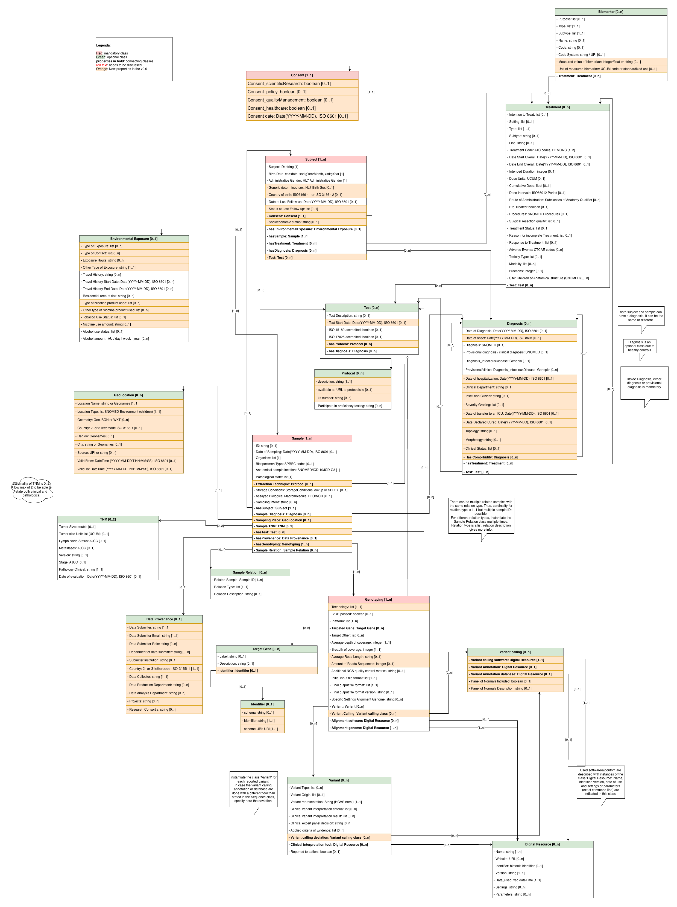

GDI Harmonised Minimal Data Model v2.0 – Changelog
This page describes the main model changes between version 1.1 and version 2.0.
Alignment with Minimal Dataset for Infectious Diseases (MDID)
A substantial part of the work towards version 2.0 focused on aligning the
Minimal Dataset for Infectious Diseases (MDID) with the
GDI Harmonised Minimal Data Model. This work contributed to
the refinement and extension of several HMD concepts and properties to
support the requirements identified in the MDID.
Updated diagram
The diagram has been updated to reflect the v2.0 model, including new
classes, properties, and connections.
In the diagram below, new properties are highlighted in orange
to make the changes to the existing model easier to identify.

New classes
-
Test: introduces a general class for representing tests,
with properties such as Test Description, Test Start Date, ISO 15189
accreditation and ISO 17025 accreditation.
-
Protocol: introduces a structured concept for describing
protocols used in the data-generation process.
-
Consent: introduces an explicit representation of consent
information.
-
GeoLocation: provides structured geographical information,
including Location Name, Location Type, Geometry, Country, Region, City,
Source, Valid From and Valid To.
-
Data Provenance: provides structured information about
data submission, collection, production and analysis, including submitter,
collector, departments, institution, projects and research consortia.
-
Identifier: provides structured representation of
identifiers and their identifier schemes.
-
Variant Calling: introduces a dedicated class for
representing variant-calling information and its associated properties
within the genomic analysis model.
Changes to existing classes
Biomarker
-
Biomarker is explicitly modelled as a type of Test.
-
Measured value of biomarker is added.
-
Type, Name, Code and Code System are further specified, including
terminology bindings.
Sample
-
Sampling place is represented through the new
GeoLocation class.
-
Sample diagnosis and provenance information are
explicitly represented.
-
Storage conditions, sampling information and biospecimen terminology
are further specified.
-
Extraction technique is linked to the
Protocol class.
Subject
-
Socioeconomic status is added.
-
Consent is added and further specified.
-
Subject information is further connected to the existing clinical and
sample concepts.
Diagnosis
-
Diagnosis information is further structured and specified for
infectious-disease use cases.
-
Additional representation of comorbidity is introduced.
Treatment
-
Treatment coding and terminology are further specified.
-
Dose Units use UCUM.
-
Reason for incomplete Treatment and
Response to Treatment are further specified.
-
Fractions and Site are further
specified for radiation therapy.
Genotyping
-
Genotyping is explicitly modelled as a subclass of
Test.
-
Genotyping-specific information includes Technology, IVDR status and
Sequencing Platform.
-
Genotyping is therefore represented within the general testing structure
rather than as a new top-level class.
Variant
-
Variant Type is further specified and its cardinality
is changed.
-
Variant terminology and representation are further specified.
-
Variant Calling is further structured within the
genomic analysis model.
Target Gene
-
Scheme URI is added.
-
The representation of a target gene by identifier or label is further
specified.
Sample Relation
-
The cardinality of Related Sample is changed.
-
Relation information is further clarified and property names are
normalized.
Digital Resource
-
Version changes from a numeric representation to a
string representation.
-
Date used is represented using ISO 8601.
-
Parameters are further specified for resources
associated with genotyping alignment software.
Environmental Exposure
-
Representation is further structured, including more explicit exposure
information and expanded tobacco/nicotine and alcohol information.
Changed cardinalities
| Class – Property |
Version 1.1 |
Version 2.0 |
| Biomarker – Type |
1..1 |
1..1 (conditional) |
| Biomarker – Code System |
0..1 |
1..1 (conditional) |
| Digital Resource – Parameters |
0..n |
1..n (conditional) |
| Sample Relation – Related Sample |
1..n |
1..1 |
| Target Gene – Label |
0..1 |
1..1 (conditional) |
| Treatment – Treatment Code |
1..n |
1..n (conditional) |
| Variant – Variant Type |
0..n |
0..1 |
New cardinalities introduced with new classes
In addition to changes to existing cardinalities, v2.0 introduces new
model elements and associations with their own cardinalities.
| Class – Property – Class |
Version 2.0 |
| Test – hasProtocol – Protocol |
0..n |
| Sample – Extraction Technique – Protocol |
0..1 |
| Sample – Sampling Place – GeoLocation |
0..1 |
| Target Gene – Identifier – Identifier |
0..1 |
| Genotyping – Variant Calling – Variant Calling |
0..n |
| Variant – Variant Calling – Variant Calling |
0..n |
The cardinalities of the properties within the new classes are defined in
the v2.0 model tables. The updated UML diagram provides an overview of
these new classes, properties and associations.
Summary
Version 2.0 extends and refines the
GDI Harmonised Minimal Data Model through new classes,
additional properties, clearer representation of testing and genomic
analysis, refined existing classes and updated cardinalities. A major
driver for the work was the alignment of the MDID with
the HMD.